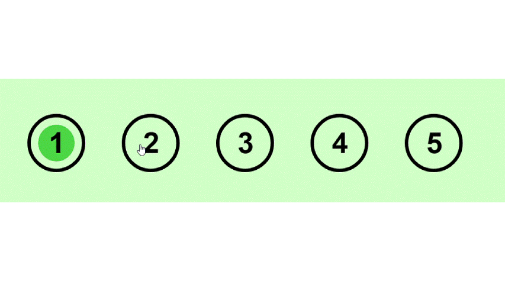

Dette skal enten leses av eller for deltager før testen startes!
Testen skal utføres på en laptop uten datamus (ikke telefon)
Hver deltager skal lage 2 skiver avokado toast, en per test. Rekkefølgen på testene er test 1 så test 2
Du må lese oppskriftsteksten høyt, før du utfører oppgaven.
Det er ikke lov å gjøre samme del av de to testene samtidig for å spare tid (F.eks. riste 2 brødskiver samtidig).
Du kan kun navigere i oppskriften med stemme.
Stemmekomandoene er: “step one”, “step two”, “step three”, “step four”, “step five”.
Du kan kun navigere i oppskriften med touchpad som i bilde under
